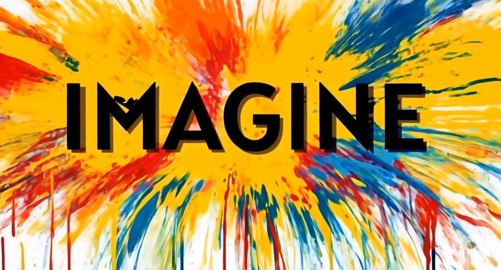
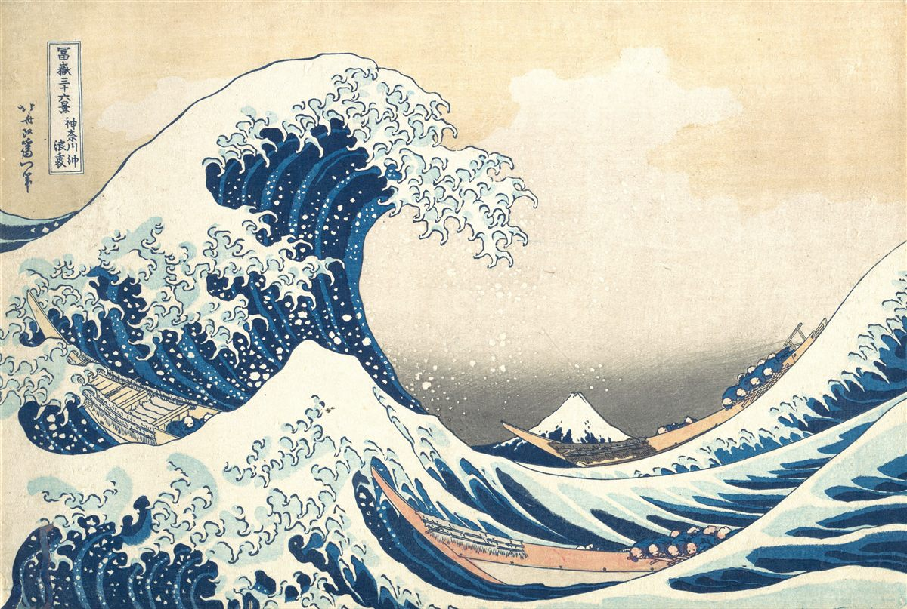
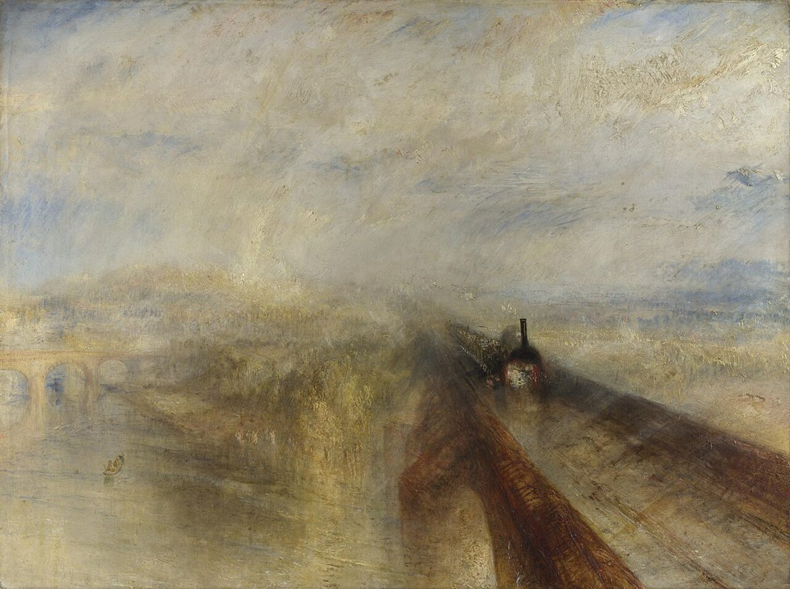
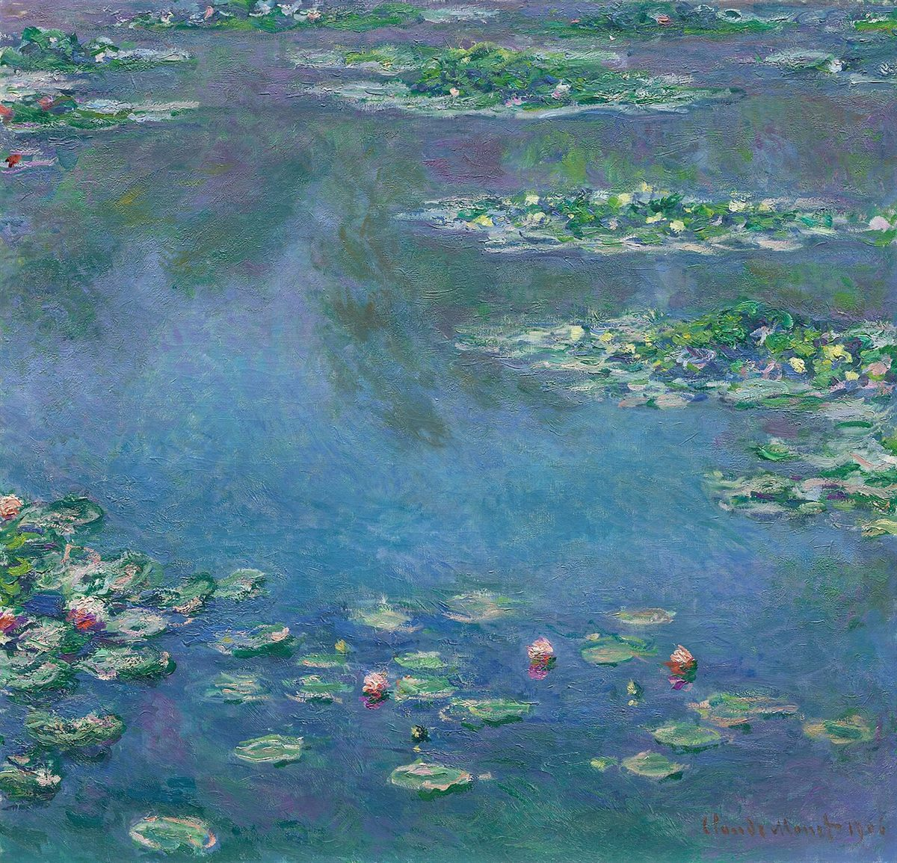
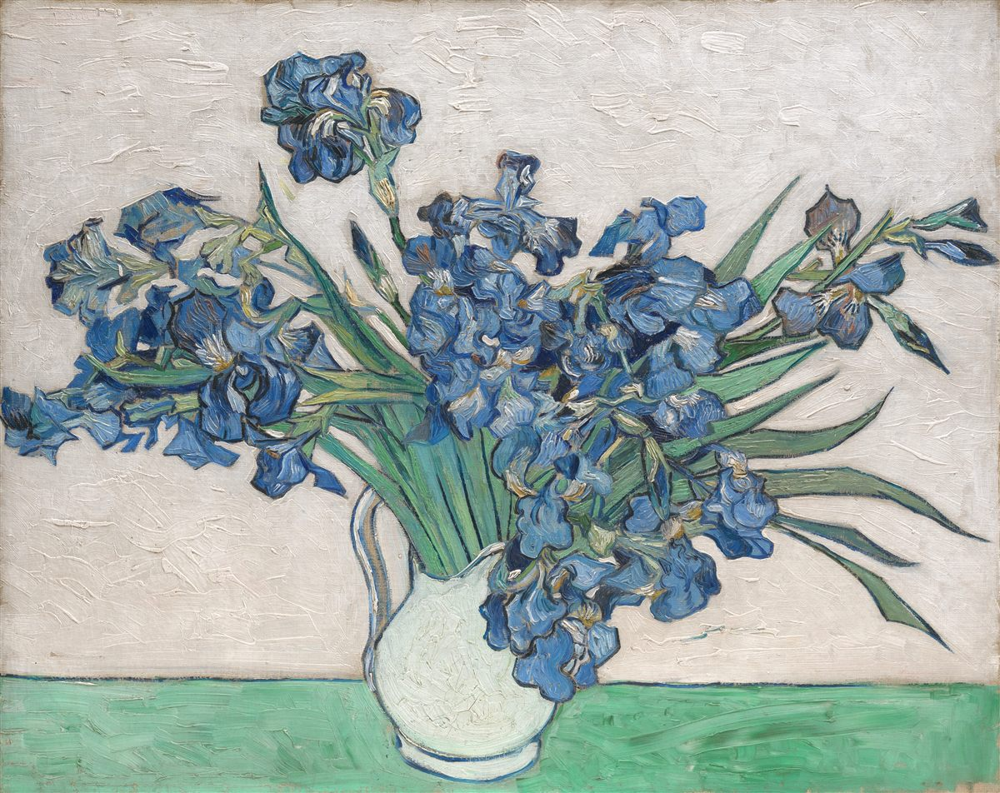
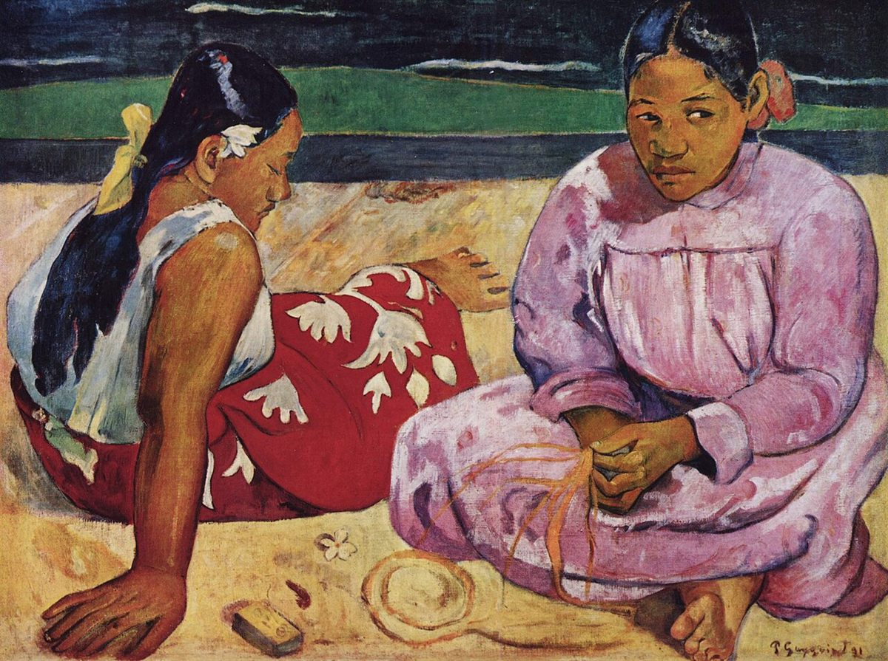

Jaune-Rouge-Bleu
Expositions personnalisées, accessibles aux aveugles et aux sourds, comparaisons mondiales — une plateforme culturelle unique.
Expositions spéciales
Chargement des expositions…
Sélectionnez vos préférences. L'exposition personnalisée se génère instantanément.




👁️ Pour les aveugles & malvoyants : description audio de chaque œuvre.
📳 Pour les sourds & malentendants : partition visuelle animée et vibrations haptiques à ressentir dans le corps.
Sélectionnez une œuvre

Description audio détaillée : couleurs, formes, composition, contexte.
Partition visuelle animée + vibrations haptiques à ressentir dans le corps.
Séances de contemplation guidées pour explorer vos émotions à travers les œuvres du domaine public.
Choisissez une séance
Les expositions se créent et se modifient dans Pages CMS, avec une connexion sécurisée par compte GitHub ou par invitation e-mail.